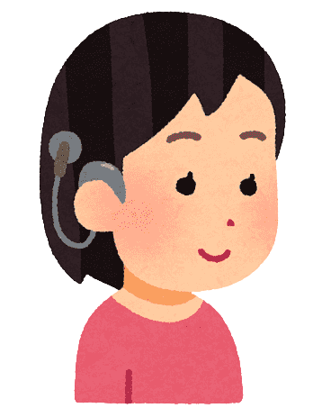
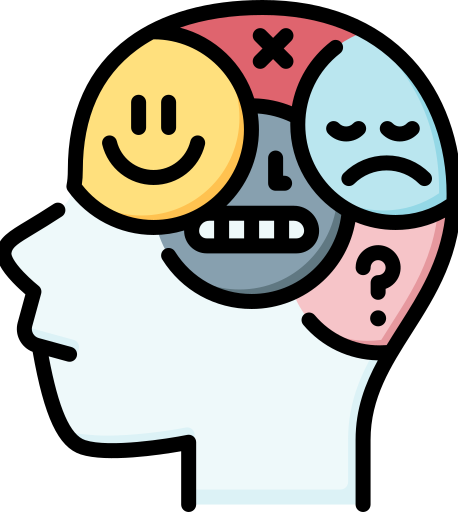

Discapacidades que abarca la página web
Los siguientes tipos de discapacidad son los que hasta el momento esta disponibles en el programa antes mencionado
Discapacidad Visual
La discapacidad visual es una condición
que afecta directamente la percepción
de
imágenes en forma total o parcial

Discapacidad Auditiva
Es la falta, disminución o pérdida
de
la capacidad para oír en algún
lugar
del aparato auditivo.

Discapacidad Psicosocial
Es la limitación de las personas
que
presentan disfunciones temporales
o permanentes
de la mente para realizar
una o más actividades
cotidianas